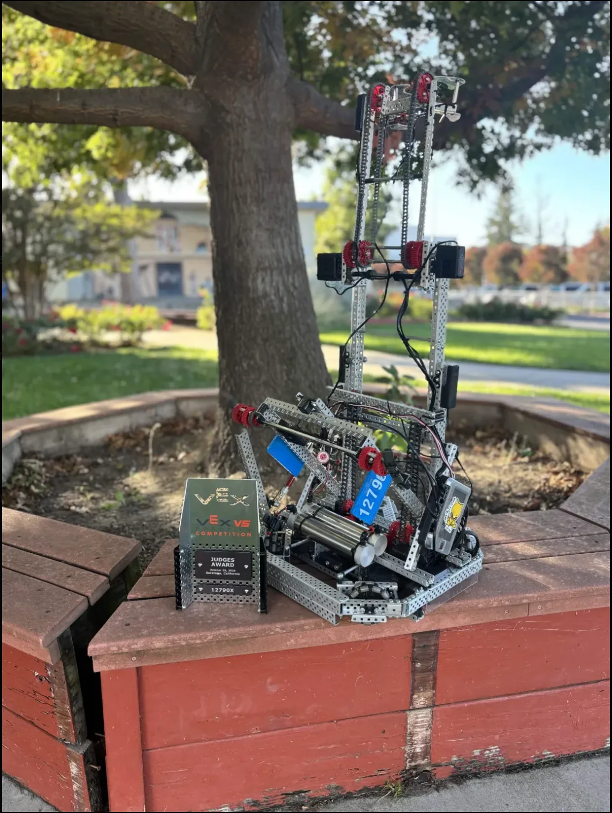

The first two competitions for 12790X Entropic Alpacas yielded a solid start to the season. We won the Judges Award and the Amaze Award for our work across mechanical design, software, and team management.
I’m looking forward to programming new routes and revising the robot as we pursue state-qualifying awards at our next competition on November 15!